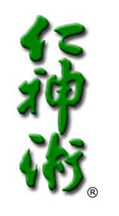

- JIN SHIN JYUTSU PHISIO-PHILOSOPHY
- ("Shin" (Hebrew) "Life Breath of the Gods" or "Spirit of God")
- (Phisio-Philisophy - "Nature - Effortless Reality"
- Man "Compassionate, Aware, Understanding, KNOWING"
Shin Jyutsu Phisio-Philisophy is a dynamic healing art from ancient tradition. Brought by Mary Burmeister to America, a gift from Jiro Murai of Japan. Murai decoded this Art from the Kojiki (Record of Ancient Things-AD 712) and other ancient records contained within the Imperial Archives of Japan.
Jin Shin Jyutsu works wonderfully with people and animals alike.
Jin Shin Jyutsu sessions can be done in person or remotely.
Each body has a main revitalizing energy that follows a circulatory pattern. This energy revitalizes all of our “individualized” body function energy circulation patterns. The rhythm of this energy cannot be destroyed, but hereditary issues and abuses to the body knowingly or unknowingly can affect the supply of the energy for the proper function of our body energy circulation patterns. The body is affected by the air, food, action, thoughts, etc. that make up each moment of our lives. When harmony becomes disrupted or imbalanced it becomes the cause for various tensions, illnesses and diseases. Physical symptoms of distress and pain are your body’s way of telling you it is out of harmony.
Subconsciously and/or unconsciously we create complex and sometimes mysterious mechanisms to protect us from traumatic and stressful experiences. These mechanisms run silently below the surface of our conscious mind as coping skills that help us endure and survive difficult events, situations and chronically painful conditions throughout our lives. However, their repetitive application often leads to thoughts, feelings, belief systems, patterns and actions that create disharmony and can lead to illness or diseases that rob us of living our fullest potential in life. Each moment of our lives is recorded in our cellular memory. The cellular memory records stressful or traumatic events you have experienced and, very important, the coping skills you called up or invented to respond to the stress. At the time, that particular coping skill was the best tool you had available. For example, if a child grew up in an environment of extreme criticism, s/he may have coped by disconnecting from their emotions or becoming self-critical as well. While that subconscious mechanism helped them get through their childhood, most likely it has been the cause of later problems with self-confidence or trying to form intimate relationships. That cellular history is still active somewhere within you. Hyper-vigilant, whenever you encounter a situation connected in some way to that earlier experience, at some level, alarm bells go off and your subconscious initiates behavior for you to avoid or escape the moment. When you harmonize negative belief systems and patterns you stop that self-sabotaging behavior and often realize numerous ways in which you feel better being in the world.
Jin Shin Jyutsu is energy work (sometimes referred to as energy medicine or vibrational healing) that brings the body, mind and spirit into Harmony. It clears and brings balance to the body’s energies, allowing you to function better, feel better and facilitates our own profound healing capacity. It is a valuable compliment to conventional healing methods, inducing relaxation and reducing the effects of stress. It can be used alone or safely in conjunction with any other therapy or medication. A Jin Shin Jyutsu session lasts about an hour. It uses simple hands-on sequences to restore emotional equilibrium, relieve pain, and release the causes of both acute and chronic conditions.
Jin Shin Jyutsu employs twenty-six Energy Safety Locks on the body that are located along the pathways that feed life into our bodies. When one or more of these Energy Safety Locks become blocked, the blockage or stagnation will disrupt the flow and eventually disharmonize the complete path of the energy flow. Holding these locks in combinations will bring balance, physically, mentally, emotionally and spiritually.